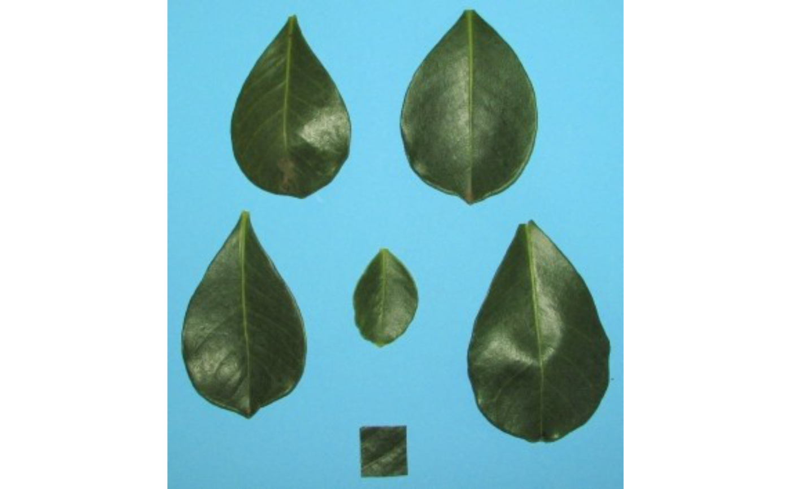
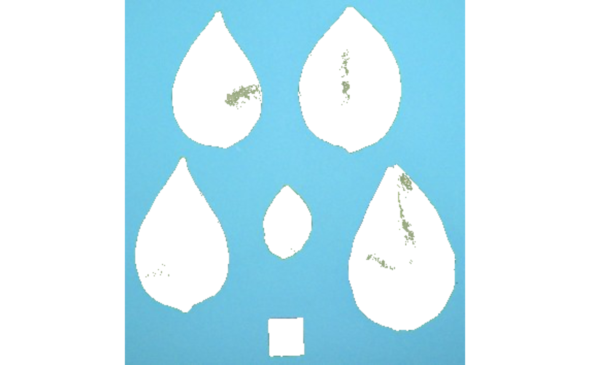
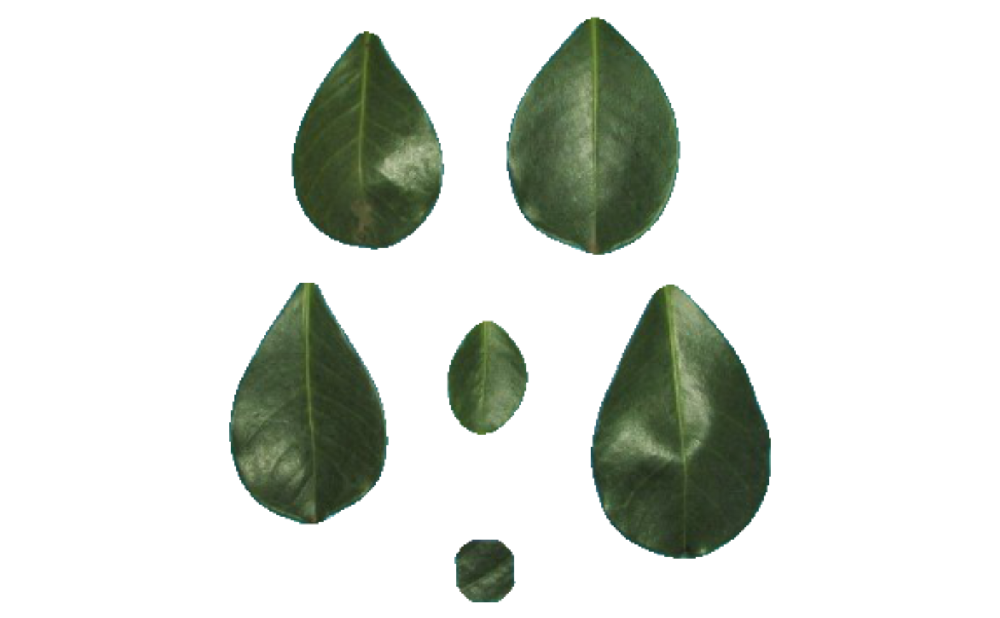

Segments image objects using clustering by the k-means clustering algorithm
Usage
image_segment_kmeans(
img,
bands = 1:3,
nclasses = 2,
invert = FALSE,
opening = FALSE,
closing = FALSE,
filter = FALSE,
erode = FALSE,
dilate = FALSE,
fill_hull = FALSE,
plot = TRUE
)Arguments
- img
An
Imageobject.- bands
A numeric integer/vector indicating the RGB band used in the segmentation. Defaults to
1:3, i.e., all the RGB bands are used.- nclasses
The number of desired classes after image segmentation.
- invert
Invert the segmentation? Defaults to
FALSE. IfTRUEthe binary matrix is inverted.- erode, dilate, opening, closing, filter
Morphological operations (brush size)
dilateputs the mask over every background pixel, and sets it to foreground if any of the pixels covered by the mask is from the foreground.erodeputs the mask over every foreground pixel, and sets it to background if any of the pixels covered by the mask is from the background.openingperforms an erosion followed by a dilation. This helps to remove small objects while preserving the shape and size of larger objects.closingperforms a dilatation followed by an erosion. This helps to fill small holes while preserving the shape and size of larger objects.filterperforms median filtering in the binary image. Provide a positive integer > 1 to indicate the size of the median filtering. Higher values are more efficient to remove noise in the background but can dramatically impact the perimeter of objects, mainly for irregular perimeters such as leaves with serrated edges.
Hierarchically, the operations are performed as opening > closing > filter. The value declared in each argument will define the brush size.
- fill_hull
Fill holes in the objects? Defaults to
FALSE.- plot
Plot the segmented image?
Value
A list with the following values:
imageThe segmented image considering only two classes (foreground and background)clustersThe class of each pixel. For example, ifncluster = 3,clusterswill be a two-way matrix with values ranging from 1 to 3.masksA list with the binary matrices showing the segmentation.
References
Hartigan, J. A. and Wong, M. A. (1979). Algorithm AS 136: A K-means clustering algorithm. Applied Statistics, 28, 100–108. doi:10.2307/2346830
Examples
img <- image_pliman("la_leaves.jpg", plot = TRUE)

seg <- image_segment_kmeans(img)

seg <- image_segment_kmeans(img, fill_hull = TRUE, invert = TRUE, filter = 10)
